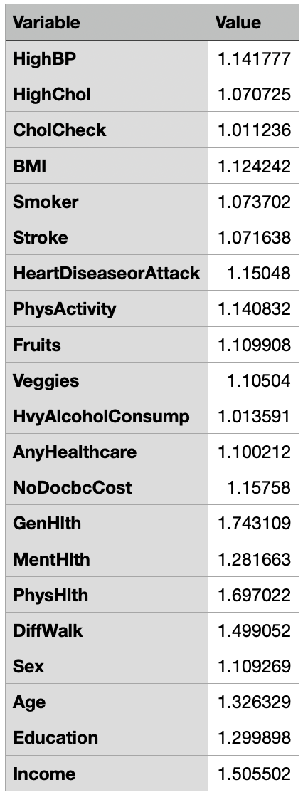
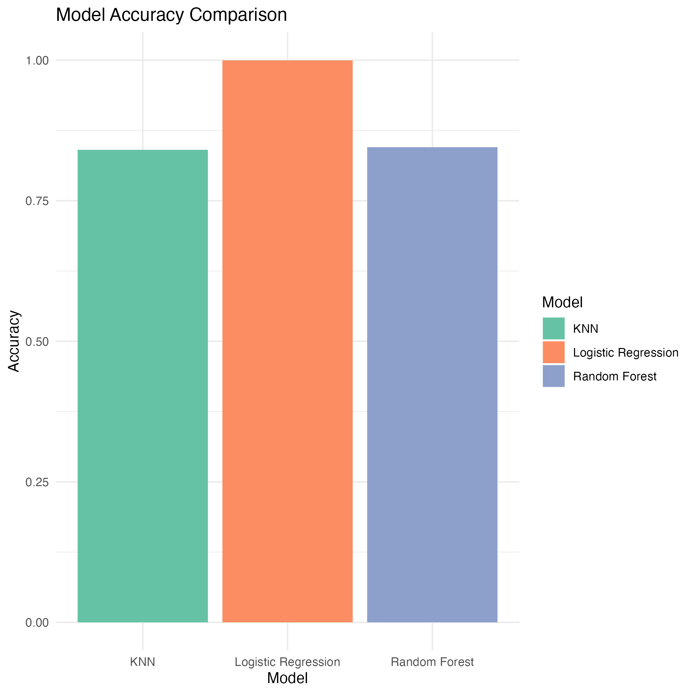

library(readr)Manuscript for a Data Analysis Project: Diabetes Diagnosis
1 Summary/Abstract
Diabetes is a chronic condition that affects millions of people worldwide, characterized by high blood glucose levels and serious complications if not managed properly. This study aims to identify key health indicators predicting the likelihood of an individual being diagnosed with diabetes using a dataset from the UC Irvine Machine Learning Repository, containing over 250,000 instances and 21 features. Three models were utilized: logistic regression, random forest, and K-nearest neighbors (KNN). The analysis revealed that BMI, high blood pressure, heart disease or attack history, and heavy alcohol consumption were significant predictors of diabetes. Logistic regression and KNN models demonstrated reasonable accuracy, while the random forest model required refinement. The study highlights the importance of these health indicators and suggests further data processing and model tuning for improved predictive performance.
2 Introduction
2.1 General Background Information
“Diabetes can lead to severe, and in some cases, life-threatening complications.” (Warning symptoms, 2024). Diabetes is a major cause of blindness, kidney failure, heart attacks, stroke, and lower limb amputation. Managing diabetes and its complications places a significant burden on healthcare systems worldwide. Early diagnosis and management are crucial to prevent adverse health outcomes. Several studies have identified various risk factors associated with diabetes, including age, BMI, physical activity, and dietary habits.
2.2 Description of data and data source
This dataset comes from UC Irvine Machine Learning Repository. This data has been gathered and processed from the CDCs website in 2014. This dataset includes over 250,000 instances (observations) and 21 features, ranging from personal information (income/education) to health history (drinking/smoking/physical health). Bellow are the features and there respective descriptions
| Feature | Description |
|---|---|
| ID | Patient ID |
| Diabetes_binary | 0 = no diabetes 1 = prediabetes or diabetes |
| HighBP | 0 = no high BP 1 = high BP |
| HighChol | 0 = no high cholesterol 1 = high cholesterol |
| CholCheck | 0 = no cholesterol check in 5 years 1 = yes cholesterol check in 5 years |
| BMI | Body Mass Index |
| Smoker | Have you smoked at least 100 cigarettes in your entire life? [Note: 5 packs = 100 cigarettes] 0 = no 1 = yes |
| Stoke | (Ever told) you had a stroke. 0 = no 1 = yes |
| HeartDiseaseorAttack | coronary heart disease (CHD) or myocardial infarction (MI) 0 = no 1 = yes |
| PhysActivity | physical activity in past 30 days - not including job 0 = no 1 = yes |
| Fruits | Consume Fruit 1 or more times per day 0 = no 1 = yes |
| Veggies | Consume Vegetables 1 or more times per day 0 = no 1 = yes |
| HvyAlchoholConsump | Heavy drinkers (adult men having more than 14 drinks per week and adult women having more than 7 drinks per week) 0 = no 1 = yes |
| AnyHealthcare | Have any kind of health care coverage, including health insurance, prepaid plans such as HMO, etc. 0 = no 1 = yes |
| NoDocbcCost | Was there a time in the past 12 months when you needed to see a doctor but could not because of cost? 0 = no 1 = yes |
| GenHlth | Would you say that in general your health is: scale 1-5 1 = excellent 2 = very good 3 = good 4 = fair 5 = poor |
| MentHlth | Now thinking about your mental health, which includes stress, depression, and problems with emotions, for how many days during the past 30 days was your mental health not good? scale 1-30 days |
| PhysHlth | Now thinking about your physical health, which includes physical illness and injury, for how many days during the past 30 days was your physical health not good? scale 1-30 days |
| DiffWalk | Do you have serious difficulty walking or climbing stairs? 0 = no 1 = yes |
| Sex | 0 = female 1 = male |
| Age | 13-level age category (_AGEG5YR see codebook) 1 = 18-24 9 = 60-64 13 = 80 or older |
| Education | Education level (EDUCA see codebook) scale 1-6 1 = Never attended school or only kindergarten 2 = Grades 1 through 8 (Elementary) 3 = Grades 9 through 11 (Some high school) 4 = Grade 12 or GED (High school graduate) 5 = College 1 year to 3 years (Some college or technical school) 6 = College 4 years or more (College graduate) |
| Income | Income scale (INCOME2 see codebook) scale 1-8 1 = less than $10,000 5 = less than $35,000 8 = $75,000 or more |
https://archive.ics.uci.edu/dataset/891/cdc+diabetes+health+indicators
2.3 Questions/Hypotheses to be addressed
“What are the key health indicators that predict the likelihood of an individual being diagnosed with diabetes?” Specifically, identifying which factors are most strongly associated with diabetes prevalence in the population.
3 Methods
The main question I would like to answer with this project is “What are the key health indicators that predict the likelihood of an individual being diagnosed with diabetes?”.
3.1 Data acquisition
This data comes from CDC and will be sampled during analysis.
3.1.1 Outcome of Interest
The primary outcome of interest will be whether an individual has been diagnosed with diabetes or not. This outcome will be represented as a binary variable where 1 indicates a diabetes diagnosis and 0 indicates no diabetes.
3.1.2 What (if any) specific predictors will you focus on?
The specific predictors I will focus on are age, gender, BMI, consumption of fruits and vegetables, and frequency of exercise. Although these are the main predictors I will focus on, I’ll also use data analytic techniques to identify which predictors are of importance or have relationships with the response variable.
3.1.3 What relations/patterns are you looking for in the data?
I will look for patterns ad relationships between the predictors and the outcome of diabetes diagnosis. More specifically, I will analyze correlations between individual predictors and the response variable, interaction effects between predictors and the response variable, and predictive models such as logistic regression, decision trees, and machine learning classifiers.
3.2 Data import and cleaning
Not much occurs during the cleaning stage as the dataset was processed and cleaned prior. The only modifications made to the dataset was removing the ‘ID’ column as it is not useful for this analysis. Once the data was imported, it was only a matter of converting categorical variables to factors so they would function properly. One-hot encoding was implemented, but only for the multinomial logistic regression.
3.3 Statistical analysis method
For my analysis, I will first look at the distributions of each variable to identify if the dataset is balanced and outliers. I do not think any data cleaning will need to be done as that was completed when the data was collected from the CDC’s website. Next, I will create a correlation matrix to view the correlations between each predictor and the response variable. After viewing the correlations, I will then use simple linear regression and random forest models to identify variables of importance, these variables will be noted and used later during the modeling phase. I will utilize cross validation during the modeling phase. This section will be filled out more once we are further into the class and have discussed more approaches/methods.
3.3.0.1 Logistic Regression
Logistic regression will be used to model the relationship between the binary outcome variable and the predictors. This method will help in understanding the influence of each predictor on the likelihood of diabetes diagnosis.
3.3.0.2 Random Forest
Random forest, an ensemble learning method, will be used to improve the accuracy and robustness of predictions. It will help in identifying the importance of each predictor in determining the diabetes diagnosis.
3.3.0.3 K-Nearest Neighbors (KNN)
KNN will be used as a non-parametric method to classify individuals based on the closest training examples in the feature space. This will provide insights into the influence of neighborhood-based predictions on diabetes diagnosis.
For my model selection, I referenced ISLR2. (Gareth James, 2023)
4 Results
4.1 Exploratory/Descriptive analysis
4.1.1 Distribution of all variables
knitr::include_graphics(here("results","figures","variable-distributions.png"))4.1.2 Correlation Matrix
knitr::include_graphics(here("results","figures","correlation_matrix.png"))4.1.3 Feature Importance - Linear Regression
knitr::include_graphics(here("results","figures","importance_table.png"))
4.1.4 Feature Importance - Random Forest
knitr::include_graphics(here("results","figures","variable_importance.png"))Overall, the variables do not show much correlation with one another, however I have a feeling that I may need to do more data processing, i.e. making categorical variables into factors and removing them from the correlation matrix. I decided to include some distributions of variables that I found to be interesting, such as BMI, Age, PhysHlth, and Smoker. After running both a linear and random forest model to determine the most important features, it looks as if BMI, HighBP, HeartDiseaseorAttack, and HvyAlchoholConsump are the most important features to include in the models.
4.2 Basic statistical analysis
4.2.1 Methods
After processing and exploring the data, it was discovered that a majority of the features in this dataset are categorical. Therefore, we will be making use of models that are more rigorous to our situation, such as random forest and KNN. However before trying those models, we will first do a simple multinomial logistic regression. Why multinomial? That is because our response variable is not binary, it has three levels to it; typically, logistic regression is used for binary classification. After creating models with all features included, we will go on to look at models with features that fit our importance criteria (i.e. look at the models results when using the most important features).
4.2.2 Preparing the data
For some of the models, mainly multinomial logistic regression, we need to further process our data. The method we will use is known as one-hot encoding. One-hot encoding is a process of converting categorical variables into a binary (0 or 1) format where each category becomes a new binary column. We need to do this because most machine learning algorithms require numerical input and cannot handle categorical data directly, so formatting this data in a different manner will provide us with better results.
4.2.3 Results
4.2.3.1 Multinomial Logistic Regression - All Features
Confusion Matrix and Statistics
Reference
Prediction X0 X1 X2
X0 21075 398 2891
X1 3 1 1
X2 477 32 622
Overall Statistics
Accuracy : 0.8509
95% CI : (0.8465, 0.8553)
No Information Rate : 0.8453
P-Value [Acc > NIR] : 0.006606
Kappa : 0.1995
Mcnemar's Test P-Value : < 2.2e-16
Statistics by Class:
Class: X0 Class: X1 Class: X2
Sensitivity 0.9777 2.320e-03 0.17701
Specificity 0.1663 9.998e-01 0.97685
Pos Pred Value 0.8650 2.000e-01 0.54996
Neg Pred Value 0.5775 9.831e-01 0.88132
Prevalence 0.8453 1.690e-02 0.13780
Detection Rate 0.8265 3.922e-05 0.02439
Detection Prevalence 0.9555 1.961e-04 0.04435
Balanced Accuracy 0.5720 5.011e-01 0.57693The logistic regression model was applied to the dataset to analyze the relationship between the binary outcome variable (diabetes diagnosis) and the predictors. The model achieved an accuracy of 85.09%. However, the model showed that the target variable might not be balanced, indicating that further data processing might be necessary.
4.2.3.2 Random Forest - All Features
Confusion Matrix and Statistics
Reference
Prediction X0 X1 X2
X0 21555 431 3514
X1 0 0 0
X2 0 0 0
Overall Statistics
Accuracy : 0.8453
95% CI : (0.8408, 0.8497)
No Information Rate : 0.8453
P-Value [Acc > NIR] : 0.5042
Kappa : 0
Mcnemar's Test P-Value : NA
Statistics by Class:
Class: X0 Class: X1 Class: X2
Sensitivity 1.0000 0.0000 0.0000
Specificity 0.0000 1.0000 1.0000
Pos Pred Value 0.8453 NaN NaN
Neg Pred Value NaN 0.9831 0.8622
Prevalence 0.8453 0.0169 0.1378
Detection Rate 0.8453 0.0000 0.0000
Detection Prevalence 1.0000 0.0000 0.0000
Balanced Accuracy 0.5000 0.5000 0.5000The random forest model was applied to the dataset to improve the accuracy and robustness of predictions. The model, however, only predicted the class ‘0’, likely due to an error in model setup. This resulted in an accuracy that was not applicable, indicating the need for further refinement of the model.
4.2.3.3 KNN - All Features
Confusion Matrix and Statistics
Reference
Prediction X0 X1 X2
X0 21270 415 2975
X1 0 0 0
X2 285 16 539
Overall Statistics
Accuracy : 0.8553
95% CI : (0.8509, 0.8596)
No Information Rate : 0.8453
P-Value [Acc > NIR] : 4.769e-06
Kappa : 0.1869
Mcnemar's Test P-Value : < 2.2e-16
Statistics by Class:
Class: X0 Class: X1 Class: X2
Sensitivity 0.9868 0.0000 0.15339
Specificity 0.1407 1.0000 0.98631
Pos Pred Value 0.8625 NaN 0.64167
Neg Pred Value 0.6607 0.9831 0.87936
Prevalence 0.8453 0.0169 0.13780
Detection Rate 0.8341 0.0000 0.02114
Detection Prevalence 0.9671 0.0000 0.03294
Balanced Accuracy 0.5637 0.5000 0.56985The KNN model was applied to the dataset and achieved an accuracy of 85.53%. The model’s sensitivity and specificity values indicated that it performed reasonably well, but there was room for improvement, particularly in predicting minority classes.
4.2.3.4 Model Comparisons
knitr::include_graphics(here("results","figures","model_accuracy_comparison.png"))
5 Discussion
5.1 Summary and Interpretation
The analysis revealed that BMI, HighBP, HeartDiseaseorAttack, and HvyAlchoholConsump were significant predictors of diabetes diagnosis. Logistic regression and KNN models showed reasonable accuracy, while the random forest model required further refinement. These findings highlight the importance of these health indicators in predicting diabetes and suggest that further data processing and model tuning could improve predictive performance.
5.2 Strengths and Limitations
Imbalanced Dataset: The dataset was imbalanced, which affected the model’s performance, particularly in predicting minority classes.
Categorical Data Handling: The handling of categorical variables posed challenges, especially for models like logistic regression and random forest.
Model Setup Errors: The random forest model’s performance indicated potential errors in model setup, necessitating further refinement.
5.3 Conclusions
The study identified key health indicators that are strongly associated with diabetes diagnosis. Logistic regression and KNN models provided reasonable predictive accuracy, while the random forest model required further refinement. These findings underscore the need for balanced datasets and appropriate handling of categorical variables to improve model performance.
6 References
Gareth James, T. H., Daniela Witten. (2023). An introduction to statistical learning (2nd ed.).
Warning symptoms. (2024). Retrieved from https://diabetes.org/about-diabetes/warning-signs-symptoms